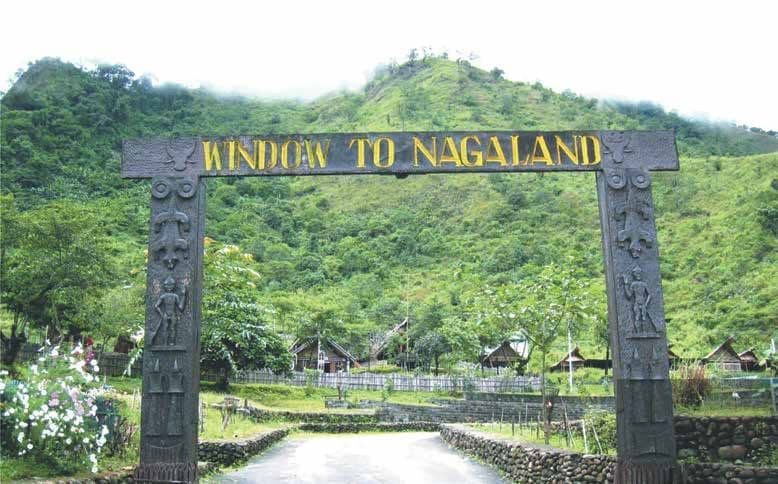

All About- 'Nagaland'

Nagaland is a mountainous state in northeast India, bordering Myanmar.
It's home to diverse indigenous tribes, with festivals and markets celebrating the different tribes' culture.
Its capital city of Kohima suffered heavy fighting in World War II, commemorated by memorials at the Kohima War Cemetery.
The Nagaland State Museum exhibits ancient weaponry, a ceremonial drum and other traditional Naga cultural artifacts.

Nagaland is a land of festivals.
All the tribes celebrate their distinct seasonal festivals with a pageantry of colour and a feast of music.
Nagaland has a rich linguistic tradition with as many languages as there are tribes, each exclusive to itself.